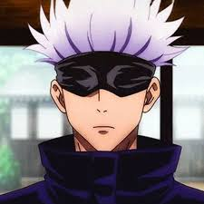

Aparência
Satoru Gojo é um homem alto, muito mais alto que seus alunos, e aparentemente é considerado atraente por muitas mulheres. Ele tem cabelo branco que geralmente é espetado para cima, mas Gojo o deixa solto quando está em um traje mais casual. Gojo tem olhos azuis brilhantes, mas eles normalmente estão cobertos por sua venda preta característica ou um par de óculos escuros.
Enquanto trabalha, Gojo usa uma jaqueta preta de gola alta com calças combinando e botas pretas. No passado, Gojo usava bandagens sobre os olhos em vez de sua simples venda. Ele tem vários trajes casuais diferentes que geralmente incluem camisas de mangas compridas e calças compridas. Ele até usa moletons de mangas compridas para ir à praia e sunga preta.
Personalidade
Satoru é um indivíduo complexo, já que normalmente é indiferente e brincalhão com pessoas como seus alunos, colegas (próximos) e amigos, mas antipático e cruel com pessoas como Executivos Feiticeiros. Ele está muito confiante em suas habilidades e reputação como um feiticeiro poderoso, casualmente descartando ameaças pessoais de Sukuna dizendo que ele poderia derrotar o Rei das Maldições facilmente. Em uma crise, Gojo é capaz de ter sangue frio. Ele priorizará a destruição de seus inimigos em vez de salvar pessoas inocentes quando pensa que o sacrifício é inevitável. No entanto, isso só se estende às pessoas mortas por seu oponente; Gojo não causará nenhum dano duradouro ou matará qualquer pessoa inocente para obter vantagem.
Habilidades
Nível Geral de Habilidade: Satoru é considerado um dos, senão, o feiticeiro mais forte da série, contendo imensas quantidades de Energia Amaldiçoada e uma técnica perigosamente poderosa. Ele também demonstrou ser capaz de utilizar a técnica de Expansão de Domínio.
Força Imensa: Possui grande força física para lutar contra maldições poderosas sem problemas, desferindo socos poderosos e arremessando Jogo a grande distância com um único chute durante sua luta.
Velocidade e Reflexos Sobre-humanos: Possui grande velocidade, conseguindo acompanhar os movimentos do Jogo sem esforço, e lançando socos e chutes quase imperceptíveis. Ele mostrou ser capaz de se mover mais rápido do que os olhos podem perceber.
Inteligência Tática: Gojo demonstrou ser bastante tático e ser capaz de descobrir o que seu oponente está planejando com informações suficientes. Ele também se mostrou extremamente adaptável a qualquer inimigo que enfrentou até agora, sabendo exatamente o que fazer para contra-atacar suas técnicas e derrotá-los.
Jujutsu
Energia Amaldiçoada Imensa: Satoru Gojo é conhecido na sociedade Jujutsu como o Feiticeiro Jujutsu mais forte. Ele ganhou este apelido devido às quantidades sobre-humanas de Energia Amaldiçoada que possui. A Energia Amaldiçoada de Gojo é vasta o suficiente para usar uma Expansão de Domínio várias vezes por dia, enquanto a maioria dos Feiticeiros só pode usá-la uma vez. Ele tem um controle incrível sobre sua energia amaldiçoada, capaz de ativar seu domínio em uma fração de segundo, usar técnicas de maldição reversa e até mesmo combinar energia maldita positiva e negativa. Gojo também é conhecido por ter duas habilidades abrangentes, sendo a primeira em cem anos a ter os Seis Olhos e a Técnica Ilimitada Amaldiçoada do clã Gojo.

Ilimitado (無 下限 Mukagen): No nível básico, Ilimitado é uma técnica inata derivada da família Gojo. Tendo sido herdada naturalmente, esta técnica funciona por meio da manipulação precisa do espaço no nível atômico, resultando em vários resultados e técnicas subsequentes dentro da capacidade geral. Com a manipulação do espaço apenas como o nível básico da técnica, Ilimitado tem três formas padrão e uma "não padrão" além disso.

Infinito (無限 Mugen): Sendo a forma neutra do Ilimitado, Infinito é comumente conhecido como a habilidade de parar, embora este seja um equívoco comum, pois o verdadeiro poder do Infinito é desacelerar as coisas. Quando algo tenta atingir Satoru, a pessoa ou objeto em questão atinge o Infinito entre ela e eles. Segundo Satoru, essa é a convergência de uma série infinita, e vem direto do paradoxo de Aquiles e da tartaruga. Da mesma forma que Aquiles nunca pegará a tartaruga devido ao potencial, quantidades infinitas de espaço finito que os separa ou como o número real um nunca tocará o número real dois devido à quantidade infinita de frações que os separam, o oponente nunca toque Satoru devido ao Infinito entre eles. Satoru é capaz de decidir o que o toca ou não, e pode fazê-lo com base na massa, velocidade e classificações de perigo.

Amplificação de Feitiço: Azul (術 式 順 転 「蒼」 Jutsushiki Junten: Ao): A versão reforçada do neutro Ilimitado, o Azul é o subproduto de Gojo amplificando os números Ilimitados e negativos, causando situações impossíveis como o negativo de uma maçã. Através da criação dessas impossibilidades, Gojo cria um cenário onde o próprio mundo é forçado a tentar se corrigir e preencher o espaço negativo, portanto, fazendo com que as coisas se agrupem no ponto dessa impossibilidade resultando em atração.

Cursed Technique Lapse Maximum Cursed Energy Output: Blue (術 式 順 転 出力 最大 「蒼」 Jutsushiki Junten Shutsuryoku Saidai: Ao): Usando o poder de atração, Gojo faz com que um único ponto atraia tudo ao seu redor. Gojo também é capaz de mover o ponto ao redor de si mesmo para atrair tudo ao seu redor para aquele ponto.

Reversão de Feitiço: Vermelho (術 式 反 転 「赫」 Jutsushiki Hanten: Aka): Sendo uma inversão do Azul, o Vermelho tem o efeito oposto. Ao usar sua técnica de reversão para inverter as propriedades de Azul, Satoru ativa a divergência de seu infinito e por sua vez faz com que uma técnica que atrai se torne uma que repele violentamente. Isso é mostrado pela primeira vez quando Gojo liberou uma capacidade permitida de interagir com um vazio criando um grande vácuo explosivo repelindo até mesmo um alvo de maldição de grau especial. Sendo uma habilidade que é alimentada por energia amaldiçoada positiva e formada como técnica de maldição reversa, a habilidade tem duas vezes a habilidade destrutiva do Azul.

Vazio Roxo (虚 式 「茈」 Kyoshiki: Murasaki): Depois de combinar "Azul" e "Vermelho", Satoru estala os dedos criando a liberação de massa imaginária que efetivamente apaga ou deleta tudo em seu caminho.

Cortina (帳 Tobari): Gojo pode criar uma barreira que circunda uma certa área. A barreira é capaz de isolar a área de outras pessoas ou de uma pessoa específica que queira entrar.

Vazio Infinito (無量 空 処 Muryōkūsho): Expansão do Domínio de Gojo. Ele cria um espaço "dentro do Ilimitado", que faz com que as ações que o oponente executa em vida sejam forçadas a ele indefinidamente. O oponente pode aparentemente ver e sentir tudo, mas a informação é interminável, limitando seus movimentos e processos de pensamento. O controle de Gojo sobre seu Domínio é tão bom que, exclusivamente, ele pode ativá-lo por um intervalo de 0,2 segundo, limitando seu efeito duradouro sobre aqueles que ele aprisiona dentro dele. Aqueles com quem ele faz contato físico também são imunes aos seus efeitos.

Seis Olhos (六 眼 Rokugan): Não se sabe muito sobre os Seis Olhos, mas sabe-se que eles desempenham algum papel no uso preciso do Ilimitado.